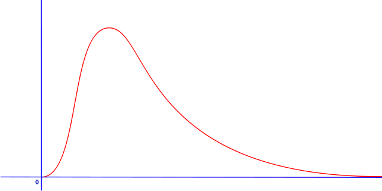

Así, por ejemplo, los tests por lo general se aproximarán con otro tipo de distribuciones. En el caso del test de Friedman, por ejemplo, se habla de distribución chi-cuadrado:

En las siguientes pestañas "Test de Wilcoxon" y "Tests de Ranking" puedes encontrar los diferentes tests no paramétricos implementados en la web.
Hipótesis nulas (H0): No existe diferencia entre el "Algoritmo A" y el "Algoritmo B".
Comentarios:
Para los tests Post-Hoc normales, se compara el mejor algoritmo del ranking con los demás.
Para los tests Post-Hoc multitests, se comparan todos los algoritmos con todos, con lo que habrá más hipótesis a contrastar.
Los tests están ordenados de menor a mayor potencia (tanto normales como multitests).
¡Sube un fichero! A la derecha de la barra la barra de navegación superior puedes seleccionar y
subir un fichero en "Subir fichero". A continuación, pulsa en "Consultar fichero" para ver su contenido.
¡Sube un fichero! A la derecha de la barra la barra de navegación superior puedes seleccionar y
subir un fichero en "Subir fichero". A continuación, pulsa en "Consultar fichero" para ver su contenido.